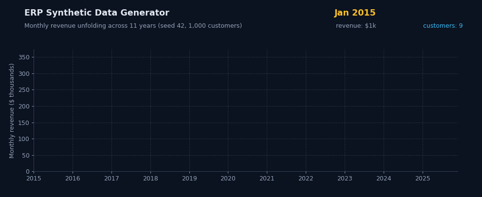
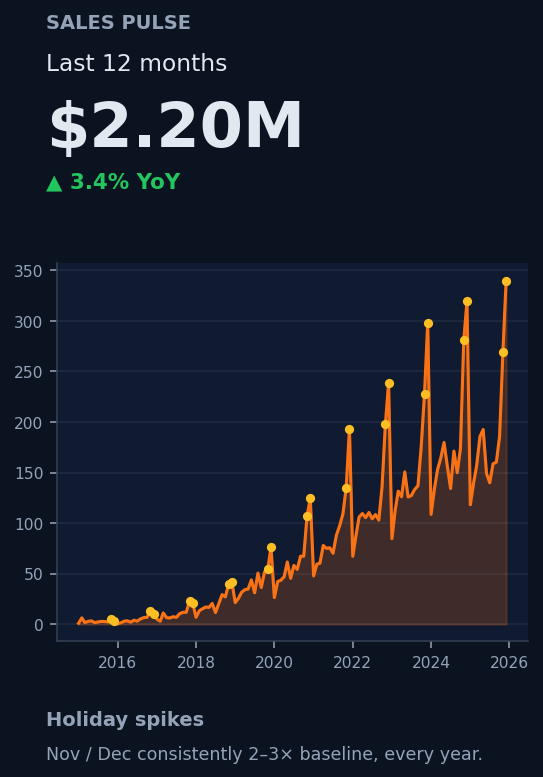
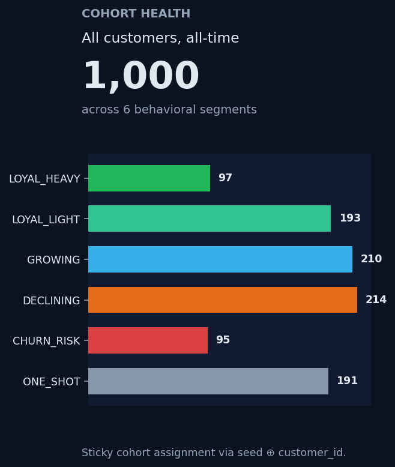
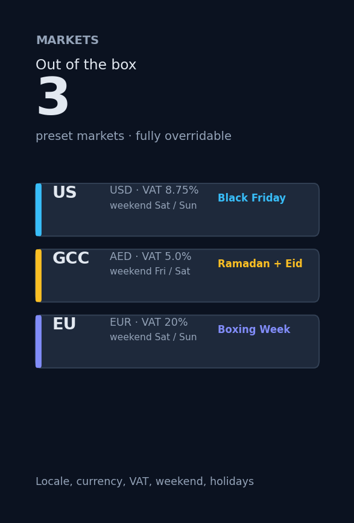

Generate 100,000+ rows of realistic, multi-year retail data across 9 relational tables — in 70 seconds, from a single Python command. AdventureWorks-style schema, Nobel-winning cohort theory, fully reproducible.




Six product decisions that turn synthetic data from "dummy CSVs" into a production-grade dataset you can train models on, ship demos with, or teach from.
Generate 100,000+ sales lines across 9 tables in 70 seconds. Streaming CSV writes mean memory stays flat — push to millions of rows on a laptop without OOM.
Cohort behavior anchored in Fader-Hardie buy-till-you-die models. Discrete choice from McFadden's Nobel-winning framework. Schema follows Microsoft AdventureWorks. 10 cited papers.
20+ CLI flags control market, seasonality, inflation rate, returns probability, promotion frequency, customer field missingness, basket composition. Every knob you'd want.
Plain CSV. Works with pandas, Excel, Power BI, Tableau, dbt, DuckDB, Postgres, Snowflake — anything that reads a delimited file. No vendor lock-in. No row caps.
US, GCC, EU presets out of the box. Locale, currency, VAT, weekend definition (Sat/Sun vs Fri/Sat), payment methods, Eid + Black Friday + Boxing Week — all swappable per market.
Single --seed flag drives every RNG. Run twice → identical CSVs, sha256 match. CI checks this on every push. Your demos won't drift.
No accounts, no API keys, no cloud setup. Pure Python, pure CSV out, pure determinism.
Editable install with the charts extra brings in matplotlib for visualization scripts.
git clone https://github.com/scripts-and-tables/erp-synthetic-data-generator
cd erp-synthetic-data-generator
pip install -e ".[charts]"Pick a market, a date range, and a scale. The erp-synth CLI handles the rest.
erp-synth --seed 42 --market us \
--n-customers 1000 \
--date-from 2015-01-01 \
--date-till 2025-12-31Open in pandas, pipe into your warehouse, or load into Power BI. 9 fully-relational CSVs, ready to query.
import pandas as pd
lines = pd.read_csv("output_csv/sales_lines.csv")
hdrs = pd.read_csv("output_csv/invoice_headers.csv")
# ... your analysis hereWhether you're prototyping a churn model, demoing a dashboard, teaching SQL, or staging a data pipeline — erp-synth gives you data that looks and behaves like the real thing, without an NDA.
One command, 70 seconds, 100,000+ rows. Or browse the technical deep-dive for the full schema, cohort math, and bibliography.